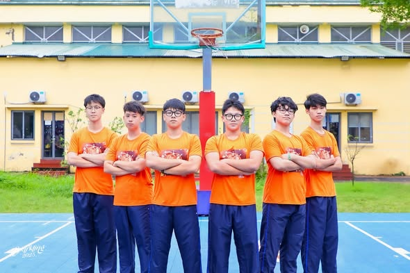
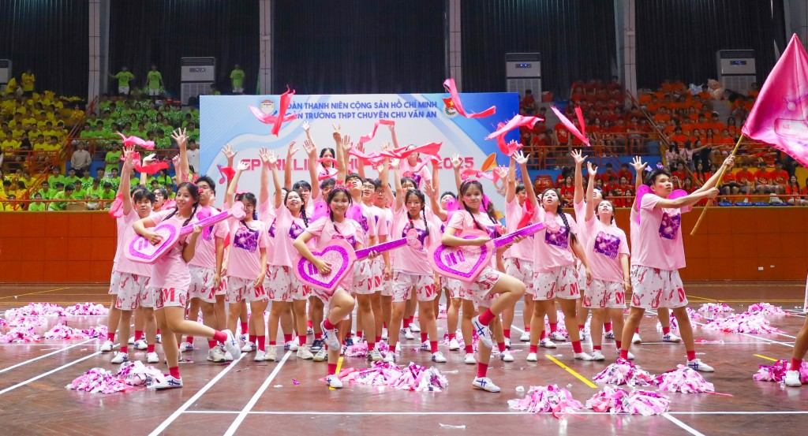
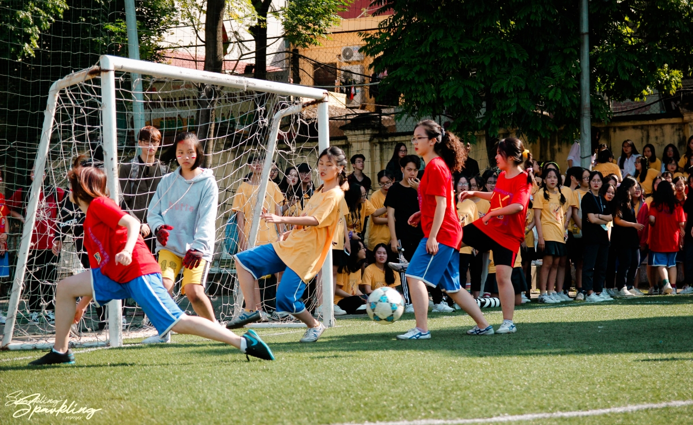
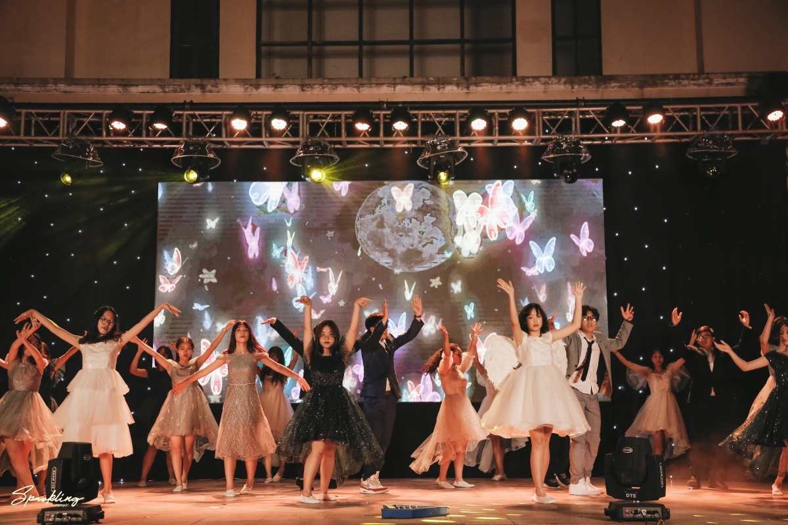

Sparkling Chu Văn An
Sự kiện thường niên của THPT Chu Văn An — nơi hội tụ văn hoá, nghệ thuật và thể thao.
Lễ phát động Sparkling
Lễ phát động Sparkling là sự kiện mở đầu cho toàn bộ mùa hội, nơi ban tổ chức công bố chủ đề của năm, giới thiệu các nhà tham gia và thông báo toàn bộ chuỗi hoạt động sẽ diễn ra. Đây được coi như bước khởi động chính thức, giúp học sinh nắm rõ timeline, tinh thần và thông điệp của Sparkling để chuẩn bị cho các cuộc thi tiếp theo.
Cuộc thi Vẻ đẹp học sinh Chu Văn An

Cuộc thi Vẻ đẹp học sinh Chu Văn An là điểm nhấn quan trọng nhất của Sparkling, nhằm tìm ra đại diện tiêu biểu về nét đẹp trí tuệ, nhân cách và tài năng của học sinh trong trường. Thí sinh sẽ trải qua nhiều vòng thi như trình diễn, phỏng vấn, tài năng và thể hiện quan điểm cá nhân. Đây không chỉ là sân chơi để tỏa sáng mà còn thể hiện sự tự tin, bản lĩnh và tính sáng tạo của học sinh.
Cuộc thi Cheerdance

Cuộc thi Cheerdance mang đến không khí sôi động và giàu năng lượng, nơi các nhà thể hiện tinh thần đoàn kết qua những màn nhảy cổ vũ được biên đạo công phu. Từng đội sẽ trình diễn các động tác đồng đều, xếp đội hình sáng tạo, kết hợp kỹ thuật nâng tung và biểu cảm mạnh mẽ để tạo nên một màn biểu diễn vừa đẹp mắt vừa đầy cảm xúc.
Liên hoan tài năng
Liên hoan tài năng là nơi học sinh thể hiện khả năng nghệ thuật của mình qua nhiều lĩnh vực như hát, múa, nhạc cụ, diễn kịch hay nhảy hiện đại. Sự kiện này tạo môi trường để học sinh phát huy sở trường, khám phá bản thân và góp phần làm phong phú đời sống văn hoá nghệ thuật trong trường. Mỗi tiết mục đều mang màu sắc riêng và thể hiện sự sáng tạo của từng cá nhân hoặc tập thể.
Ngày hội thể thao

Ngày hội thể thao là hoạt động rèn luyện sức khỏe và gắn kết tập thể, bao gồm các môn như bóng đá nữ, bóng rổ, chạy tiếp sức và nhiều trò chơi vận động khác. Sự kiện giúp tạo nên tinh thần thể thao lành mạnh, nâng cao ý thức rèn luyện thể chất và là dịp để các lớp, các nhà tranh tài trong bầu không khí vui tươi, sôi nổi.
Ngày hội văn hóa – trải nghiệm
Ngày hội văn hóa – trải nghiệm là dịp để học sinh tìm hiểu sâu hơn về truyền thống, lịch sử và nét đẹp văn hoá của Hà Nội cũng như của trường Chu Văn An. Thông qua gian hàng, triển lãm, workshop và các hoạt động tương tác, học sinh được tự tay trải nghiệm, sáng tạo và học hỏi thêm nhiều giá trị văn hoá – xã hội quan trọng.
Hoạt động thiện nguyện
Hoạt động thiện nguyện trong Sparkling hướng học sinh đến tinh thần sẻ chia và trách nhiệm cộng đồng. Các hoạt động như gây quỹ, quyên góp đồ, tham gia giúp đỡ những hoàn cảnh khó khăn được tổ chức nhằm bồi dưỡng lòng nhân ái và ý thức cống hiến của học sinh, khiến Sparkling không chỉ là ngày hội vui chơi mà còn mang giá trị nhân văn sâu sắc.
Đêm hội Sparkling Night

Sparkling Night là đêm hội lớn nhất, khép lại cả mùa Sparkling bằng những màn biểu diễn nghệ thuật hoành tráng và công bố kết quả các cuộc thi. Đây cũng là đêm chung kết cuộc thi Vẻ đẹp học sinh Chu Văn An, nơi sân khấu rực sáng với âm nhạc, ánh sáng và sự tỏa sáng của các tài năng. Không khí tại Sparkling Night luôn tràn đầy cảm xúc và là khoảnh khắc đáng nhớ nhất của mỗi mùa.